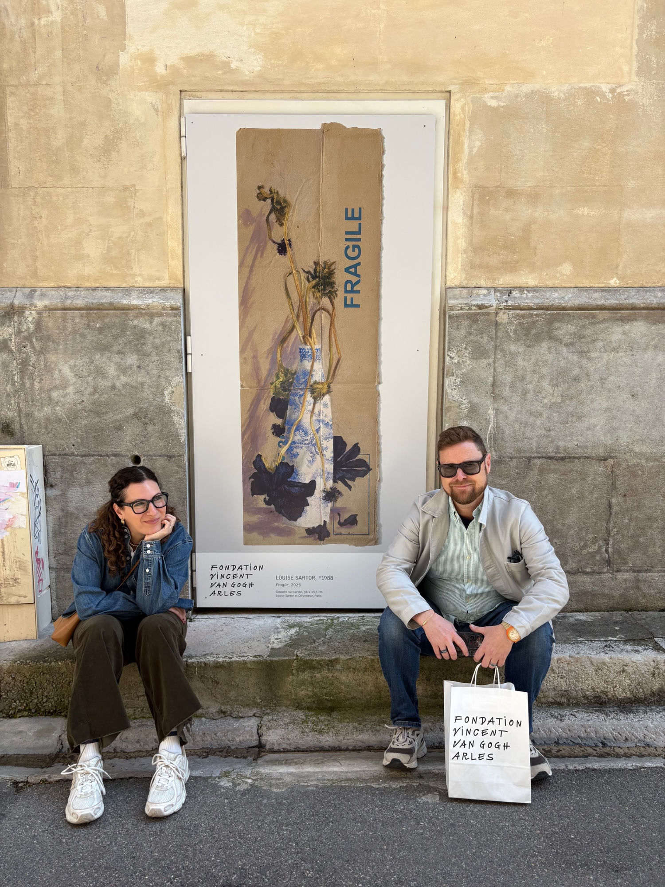

New to the Wall Foundation

Outside the Fondation Vincent van Gogh, Arles — Louise Sartor, Fragile, 2025, selected as the marquee image of To Vincent: A Winter's Tale.
The collection began in Paris, in a gallery, in front of a painting we didn't yet know was ours.
We had bought a place in Paris recently and were looking for things to do with it — ways to be in the city, ways to make the apartment feel like ours. Shana found Alexandra at The Seen on Instagram and reached out. Paris galleries can be intimidating if you are not yet a collector, and we weren't, so we asked Alexandra to take us in. She came by the apartment, we had a long call about what we liked and didn't, we had lunch, and she walked us into rooms we wouldn't have walked into on our own. One of those rooms was Ceysson & Bénétière.
We were looking at a Claire Chesnier and we bumped into each other in front of it — the way you do when you are both already looking at the same thing without having to say it. This is it. That was the first painting.
It was the same feeling we had had once before, in a different context. We had bought our house in Stone Ridge during COVID, on what had started as a staycation, the first time we had ever been there. Shana and I got out of the car on a property we had never seen before and looked at each other and said, This is right. This is where we make our home. The Chesnier was the art version of the same instinct.
A few months after the Chesnier, Alexandra took us to Art Basel Paris and we walked into the Crèvecoeur booth. There was a small Louise Sartor on the wall — gouache on cardboard, slight, almost humble — called Fragile. We looked at it and said, oh wow, that's so cool, and then we walked out and into the Mariane Ibrahim booth next door. Halfway through that next booth I stopped and turned around. No. I want to go back. I want that piece. We bought Fragile that day.
A couple of weeks later, back in the Hudson Valley, an email came in from Anastasia at Crèvecoeur: a curator from the Fondation Vincent van Gogh in Arles had come through the booth, seen the Sartor, and asked to borrow it. The show was To Vincent: A Winter's Tale, curated by Jean de Loisy and Margaux Bonopera — twenty-two artists across generations writing back to Van Gogh, alongside two of his paintings on loan from the Van Gogh Museum in Amsterdam. Fragile hung among Kiefer, Tillmans, Dijkstra, Manders, Janssens, Ancart, Josephsohn. The Foundation chose it as the marquee image of the show — the work that appeared on the exhibition banner outside the museum. The painting we had almost walked past, four months earlier, was the face of a major international exhibition about one of the great painters in history.
There is a line I have been saying to friends for a long time, and I think it came from somewhere in my family: buy it when you see it. When something stops you, when it means something, you buy it. The Van Gogh Foundation email was the universe telling us the line was right. The collection has been built on it ever since.
That's the whole strategy, and it's also the hardest part. The Glickfield-Gardner Collection wasn't built to a thesis. It was built one painting, one sculpture, one studio visit at a time, across two cities and a handful of years. The through-lines that other people find in it — geography, generation, medium — are real, but they are descriptions of what happened, not blueprints for what we did.
What we can say plainly is this:
The work usually comes first. The friendship often follows. We acquired Claire Chesnier through Ceysson & Bénétière before we knew her; she is now someone we are close to. We met Cooper Cox through DRIFT, the painting our advisor Prisca first put in front of us; once we realized Cooper's studio was in Red Hook a short drive away, we went to see him, and the friendship became one of the closest in the collection. Four Seasons, the four-panel cycle, came later, at his solo show — by then we were collecting Cooper because we knew him, not the other way around. We came across Houston Maludi's work at Art Basel Paris and were stopped by it; the piece we wanted had already sold by the time we tried to buy it, and we commissioned a new work through MAGNIN-A in Paris — with Marie-Charlotte Plagnol as our contact — because we wanted to support an artist doing work this good, not just leave with nothing. We bought from Boukhenaïssi's solo at Mariane Ibrahim because we were in the room and the work landed. Katherina Olschbaur came to us through Perrotin LA — Pauli Ochi introduced us to Ben Lee Handler there — and the first time Jimmy walked into the gallery, he and Ben hugged, the same way Cooper and Jimmy did when they first met. The relationships that matter to us tend to start that way. The pattern is consistent: we are drawn to a body of work, we follow it, we get to know the people behind it when we can, and the collection accrues from that.
We are not the kind of collectors who buy without looking. Almost every work in the collection was seen in person, in a gallery, at a fair, in a studio, before it came to us. We have advisors we trust — Prisca at Unfram'd, Alexandra at The Seen — but we make our own decisions, and we have walked away from far more than we have bought. We aren't trying to be comprehensive. We are trying to be honest about what we respond to.
We collect from joy, not from scarcity. We are not interested in chasing waitlists, working allocation lists, or fighting other collectors for the privilege of owning a painting. The blue-chip prize at the top of the sky is real and we respect it, but it is not why we do this. We want works in our home that make us feel good when we walk past them. We want artists whose practice we can support — in the collection, in the commissions, and, before long, in the Art Barn we are planning in the Hudson Valley — because the work moves us. There are more artists doing extraordinary work right now than any one collection can hold. We would rather follow the ones who demand our attention than fight for the ones the market tells us we should want.
A purchase is also a paycheck. We are just as happy buying a piece because we know it covers a few months of an artist's rent and studio time as we are buying anything else in the collection. That is not a side benefit of how we collect — it is part of why we collect. Every acquisition is also a vote for a practice continuing. The foundation exists, in part, so we can keep casting that vote on purpose.
We support artists beyond the transaction. This is the part that turns a collection into a foundation. We commissioned Houston Maludi to make new work through MAGNIN-A in Paris after the piece we wanted at Art Basel Paris had already sold — because the right response to being moved by an artist is not to leave empty-handed but to find another way to support the work. We came to Moffat Takadiwa through Alexandra at The Seen, who pointed us toward his show at Semiose; we went to see the work, were taken by it, met Moffat in person, and have since heard more about why his practice matters from Ben Lee Handler at Perrotin — one of our gallery relationships confirming an artist we'd come to through another. That kind of cross-confirmation is part of how the collection moves. We are commissioning, producing, and standing behind Chaises — a five-output collaboration with Allard van Hoorn and Charlotte Tampol, presented in Paris in October 2026. We are planning an art barn in the Hudson Valley, on donated land, to be built alongside the home we are making there. We hope to work on it with INC Architecture & Design, the firm that designed our home. The longer-term vision is a residence and a studio attached to the barn, so that artists can come and stay and make work in the place. The barn comes first; the residency program follows. The work we own is only half of what we are doing. The work we support is the other half, and over time it may be the more important one.
The galleries are people. We are based in New York and Paris, and the gallery relationships that shape the collection were built by being in those cities, walking shows, returning to the same rooms. But what we mean when we say "gallery relationship" is a person, not a brand. Adele at Ceysson-Bénétière. Anastasia at Galerie Crèvecoeur. Ben Lee Handler at Perrotin. Pauli and Natalie at Ochi. Marie-Charlotte Plagnol at MAGNIN-A. Our advisors Prisca at Unfram'd and Alexandra at The Seen. There are more, and we are still meeting them. These are the people who make the work of building the collection feel like the work of building a life. The collection's coming home is the Hudson Valley, where we are turning donated land into a place where the work — and, we hope, the people who make and place it — will eventually live in community.
We collect across painting, sculpture, installation, works on paper. Painting is currently the deepest register; sculpture and installation are areas we are growing into through commissions and productions rather than purely through acquisitions. We are interested in artists at meaningful inflection points — first solo shows, first institutional moments, first transnational dialogues — but we are not trying to time the market. We are trying to be present for the right work at the right time, and to be useful to the artists who make it.
We are not chasing a thesis. We are building a practice. Relationships with artists. Relationships with galleries. Support beyond the transaction. That is the whole of it. Everything else — the diaspora through-line a curator might notice, the Matisse-like figuration that draws us to Ludovic Nkoth, the Paris program, the Hudson Valley future — is the shape that practice has taken, not the plan we started with.
If we are doing this right, the collection in 2030 will read as the residue of how we lived, who we knew, what we paid attention to. Not a portfolio. A record.